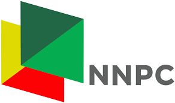
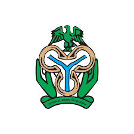
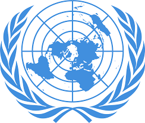

The elegant luxury bedrooms in this gallery showcase custom interior designs & decorating ideas. View pictures and find your perfect luxury bedroom design.
The United Nations is an international organization founded in 1945. Currently made up of 193 Member States, the UN and its work are guided by the purposes and principles contained in its founding Charter. The UN has evolved over the years to keep pace with a rapidly changing world. But one thing has stayed the same: it remains the one place on Earth where all the world’s nations can gather together, discuss common problems, and find shared solutions that benefit all of humanity. The Secretary-General is Chief Administrative Officer of the UN – and is also a symbol of the Organization's ideals and an advocate for all the world's peoples, especially the poor and vulnerable.
The Secretary-General is appointed by the General Assembly on the recommendation of the Security Council for a 5-year, renewable term. The current Secretary-General, and the 9th occupant of the post, is António Guterres of Portugal, who took office on 1 January 2017. On the 18th of June, 2021, Guterres was re-appointed to a second term, pledging as his priority to continue helping the world chart a course out of the COVID-19 pandemic.
The United Nations is an international organization founded in 1945. Currently made up of 193 Member States, the UN and its work are guided by the purposes and principles contained in its founding Charter. The UN has evolved over the years to keep pace with a rapidly changing world. But one thing has stayed the same: it remains the one place on Earth where all the world’s nations can gather together, discuss common problems, and find shared solutions that benefit all of humanity. The Secretary-General is Chief Administrative Officer of the UN – and is also a symbol of the Organization's ideals and an advocate for all the world's peoples, especially the poor and vulnerable.
The Secretary-General is appointed by the General Assembly on the recommendation of the Security Council for a 5-year, renewable term. The current Secretary-General, and the 9th occupant of the post, is António Guterres of Portugal, who took office on 1 January 2017. On the 18th of June, 2021, Guterres was re-appointed to a second term, pledging as his priority to continue helping the world chart a course out of the COVID-19 pandemic.


